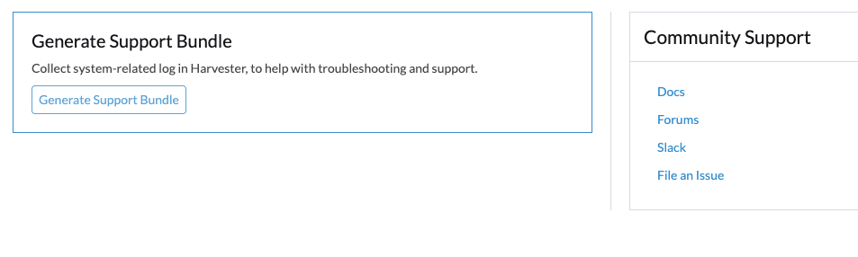

Problemas de cluster
Falha ao Implantar um Cluster Multi-nó devido à Configuração Incorreta do Proxy HTTP
Instalação ISO Sem um Arquivo de Configuração
Configurar Proxy HTTP Durante a Instalação
Em alguns ambientes, você configura http-proxy do Ambiente do SO durante a instalação.
Configurar Proxy HTTP Após o Primeiro Nó Estar Pronto
Após a instalação bem-sucedida do primeiro nó, você faz login na interface para configurar http-proxy das Configurações do Sistema.
Então você continua a adicionar mais nós ao cluster.
Um Nó Torna-se Indisponível
O problema que você pode encontrar:
The first node is installed successfully. The second node is installed successfully. The third node is installed successfully. Then the second node changes to Unavialable state and cannot recover automatically.
Solução
Se os nós no cluster não utilizarem o Proxy HTTP para se comunicar entre si após a instalação bem-sucedida do primeiro nó, você precisa configurar http-proxy.noProxy contra o CIDR usado por esses nós.
Por exemplo, seu cluster atribui IPs do CIDR 172.26.50.128/27 aos nós via configuração DHCP/estática, por favor, adicione este CIDR a noProxy.
Após configurar isso, você pode continuar a adicionar novos nós ao cluster.
Para mais detalhes, consulte problema 3091.
Instalação ISO Com um Arquivo de Configuração
Quando um arquivo de configuração é usado na instalação ISO, por favor, configure o http-proxy adequado em Configurações do Sistema.
Instalação por Inicialização PXE
Quando Instalação por Inicialização PXE é adotada, por favor, configure o http-proxy adequado em Ambiente do SO e Configurações do Sistema.
Gerar um Pacote de Suporte
Os usuários podem gerar um pacote de suporte na interface do usuário seguindo os seguintes passos:
-
Clique no link
Supportno canto inferior esquerdo da interface do usuário.
-
Clique no botão
Generate Support Bundle.
-
Insira uma descrição útil para o pacote de suporte e clique em
Createpara gerar e baixar um pacote de suporte.
|
Sempre que você encontrar um problema que possa estar relacionado a cargas de trabalho implantadas em namespaces personalizados, configure a opção support-bundle-namespaces para incluir esses namespaces como fontes de dados. O pacote de suporte coleta apenas dados dos namespaces configurados. Para erros de timeout, você pode ajustar o valor da configuração support-bundle-timeout e, em seguida, reiniciar o processo de geração do pacote de suporte. Se você pretende usar uma imagem de contêiner não padrão, pode configurar a opção support-bundle-image. |
Para informações sobre como coletar logs e arquivos de configuração do cluster convidado, consulte Coleta de Logs do Cluster Convidado.
Baixar e Manter Manualmente um Arquivo de Pacote de Suporte
Por padrão, um arquivo de pacote de suporte é gerado automaticamente, baixado e excluído após você clicar em Criar na interface do usuário. No entanto, você pode querer manter um arquivo por várias razões, incluindo as seguintes:
-
Você não consegue baixar o arquivo devido a erros de conectividade de rede e outros problemas.
-
Você deve usar um arquivo gerado anteriormente para solucionar problemas (porque gerar um arquivo de pacote de suporte leva tempo).
-
Você deseja visualizar informações que existem apenas em um arquivo gerado anteriormente.
Mesmo que o arquivo permaneça no cluster, a interface do usuário não fornece um link para download. Use a seguinte solução alternativa para gerar, baixar manualmente e manter um arquivo de pacote de suporte:
Gerar o Arquivo e Impedir o Download Automático
-
Na interface do usuário, clique em Gerar Pacote de Suporte.
-
Quando o indicador de progresso atingir 20% a 80%, feche a aba do navegador para evitar o download automático do arquivo gerado.
-
Recupere uma lista de todos os pacotes de suporte em todos os namespaces usando kubectl.
Exemplo:
$ kubectl get supportbundle -A NAMESPACE NAME ISSUE_URL DESCRIPTION AGE harvester-system bundle-htl5f sp1 3h43m
-
Recupere os detalhes de todos os pacotes de suporte existentes usando o comando
kubectl get supportbundle -A -o yaml.Exemplo:
$ kubectl get supportbundle -A -oyaml apiVersion: v1 items: - apiVersion: harvesterhci.io/v1beta1 kind: SupportBundle metadata: creationTimestamp: "2024-02-02T11:18:09Z" generation: 5 name: bundle-htl5f // resource name namespace: harvester-system resourceVersion: "1218311" uid: a3776373-05fe-4584-8a9a-baac3fa91bbf spec: description: sp1 issueURL: "" status: conditions: - lastUpdateTime: "2024-02-02T11:18:38Z" status: "True" type: Initialized filename: supportbundle_db25ccb6-b52a-4f9d-97dd-db2df2b004d4_2024-02-02T11-18-10Z.zip // support bundle file name filesize: 8868712 progress: 100 // 100 means successfully generated state: ready
O arquivo está pronto para download quando o valor de progress é "100" e o valor de state é "pronto".
Baixe o arquivo
-
Crie uma URL de download que inclua as seguintes informações:
-
VIP ou nome DNS
-
Nome do recurso do arquivo
-
Parâmetro
?retain=true: Se você não incluir este parâmetro, os recursos relacionados ao pacote de suporte são automaticamente excluídos após o arquivo ser baixado com sucesso.
Exemplo:
-
-
Baixe o arquivo usando uma ferramenta de linha de comando (por exemplo, curl e wget) ou um navegador da web.
Exemplo:
-
Verifique se os recursos relacionados ao pacote de suporte não foram excluídos.
Exemplo:
$ kubectl get supportbundle -A NAMESPACE NAME ISSUE_URL DESCRIPTION AGE harvester-system bundle-htl5f sp1 3h43m
(Opcional) Exclua os Recursos Relacionados
Os arquivos de pacote de suporte retidos consomem memória e recursos de armazenamento. Cada arquivo é suportado por um pod supportbundle-manager-bundle* no namespace harvester-system, e o arquivo ZIP gerado é armazenado na pasta /tmp do sistema de arquivos baseado em memória do pod.
Exemplo:
$ kubectl get pods -n harvester-system NAME READY STATUS RESTARTS AGE supportbundle-manager-bundle-dtl2k-69dcc69b59-w64vl 1/1 Running 0 8m18s
Você pode excluir os recursos relacionados usando os seguintes métodos:
-
Manual: Execute o comando
kubectl delete supportbundle -n {namespace} {resource-name}. Excluir um objeto de pacote de suporte exclui automaticamente o pod que o suporta.Exemplo:
$ kubectl delete supportbundle -n harvester-system bundle-htl5f supportbundle.harvesterhci.io "bundle-htl5f" deleted $ kubectl get supportbundle -A No resources found
-
Automático: Os recursos relacionados são excluídos com base em como as seguintes configurações estão configuradas:
-
support-bundle-expiration: Define o tempo permitido para reter um arquivo de pacote de suporte
-
support-bundle-timeout: Define o tempo permitido para gerar um arquivo de pacote de suporte
-
Copie manualmente o arquivo de pacote de suporte
Você pode executar o comando kubectl cp para copiar o arquivo gerado do pod de suporte.
Exemplo:
kubectl cp harvester-system/supportbundle-manager-bundle-dtl2k-69dcc69b59-w64vl:/tmp/support-bundle-kit/supportbundle_db25ccb6-b52a-4f9d-97dd-db2df2b004d4_2024-02-02T11-18-10Z.zip bundle.zip
Colete dados manualmente para o pacote de suporte
O Harvester não consegue coletar dados e gerar um pacote de suporte quando o nó está inacessível ou não está pronto. A solução alternativa é executar um script e compactar os arquivos gerados.
-
Prepare o ambiente.
mkdir -p /tmp/support-bundle # ensure /tmp/support-bundle exists echo 'JOURNALCTL="/usr/bin/journalctl -o short-precise"' > /tmp/common export SUPPORT_BUNDLE_NODE_NAME=$(hostname) -
Execute os seguintes comandos:
-
Baixe o script:
curl -o collector-harvester https://raw.githubusercontent.com/rancher/support-bundle-kit/refs/heads/master/hack/collector-harvester -
Adicione permissões de execução:
chmod +x collector-harvester -
Execute o script:
./collector-harvester / /tmp/support-bundle
-
-
Compacte os arquivos em
/tmp/support-bundlee, em seguida, anexe o arquivo compactado ao problema relacionado.
Limitações conhecidas
-
Substituir o pod de suporte impede que o arquivo de pacote de suporte seja baixado.
O arquivo de pacote de suporte é armazenado na pasta
/tmpdo sistema de arquivos baseado em memória do pod, portanto, é removido quando o pod é substituído durante a reinicialização do cluster e do nó, reprogramação do pod Kubernetes e outros processos. Após iniciar, o novo pod regenera o arquivo, mas atribui um nome diferente do nome do arquivo no objeto do pacote de suporte.Exemplo:
-
Um arquivo de pacote de suporte é gerado e mantido.
$ kubectl get supportbundle -A -oyaml apiVersion: v1 items: - apiVersion: harvesterhci.io/v1beta1 kind: SupportBundle metadata: creationTimestamp: "2024-02-06T11:01:19Z" generation: 5 name: bundle-yr2vq namespace: harvester-system resourceVersion: "1583252" uid: eb8538cf-886b-4791-a7b0-dbc34dcee524 spec: description: sp2 issueURL: "" status: conditions: - lastUpdateTime: "2024-02-06T11:01:47Z" status: "True" type: Initialized filename: supportbundle_db25ccb6-b52a-4f9d-97dd-db2df2b004d4_2024-02-06T11-01-20Z.zip // file is ready to download filesize: 7832010 progress: 100 state: ready kind: List metadata: resourceVersion: "" -
O pod de suporte reinicia.
$ kubectl get pods -n harvester-system supportbundle-manager-bundle-yr2vq-c5484fbdf-9pz8d -oyaml apiVersion: v1 kind: Pod metadata: ... labels: app: support-bundle-manager pod-template-hash: c5484fbdf rancher/supportbundle: bundle-yr2vq name: supportbundle-manager-bundle-yr2vq-c5484fbdf-9pz8d namespace: harvester-system containerStatuses: - containerID: containerd://ea82b63875c18a2b5b36afea6a47a99a5efd26464f94d401cde1727d175ef740 ... name: manager ready: true restartCount: 1 started: true state: running: startedAt: "2024-02-06T11:05:33Z" // pod's latest starting timestamp, newer than the timestamp in support bundle's file name -
O pod de suporte regenera o arquivo após iniciar.
O nome do arquivo regenerado é diferente do nome de arquivo registrado no objeto do pacote de suporte.
$ kubectl exec -i -t -n harvester-system supportbundle-manager-bundle-yr2vq-c5484fbdf-9pz8d -- ls /tmp/support-bundle-kit -alth total 2.2M drwxr-xr-x 3 root root 4.0K Feb 6 11:05 . -rw-r--r-- 1 root root 2.2M Feb 6 11:05 supportbundle_db25ccb6-b52a-4f9d-97dd-db2df2b004d4_2024-02-06T11-05-34Z.zip // different with above file name
-
As tentativas de baixar o arquivo regenerado falham.
A seguinte URL de download não pode ser usada para acessar o arquivo regenerado.
-
-
Os arquivos de pacote de suporte retidos podem afetar a reinicialização do sistema e do nó, o esvaziamento do nó e as atualizações do sistema.
Os arquivos de pacote de suporte retidos são suportados por pods no namespace
harvester-system. Esses pods são substituídos durante a reinicialização do sistema e do nó, o esvaziamento do nó e as atualizações do sistema, consumindo recursos de CPU e memória. Além disso, os arquivos regenerados são muito semelhantes em conteúdo aos arquivos retidos, o que significa que os recursos de armazenamento também são consumidos desnecessariamente.
Para mais informações, veja Problema 3383.
Acesse os Painéis do Rancher e Longhorn Embutidos
Agora você pode acessar os painéis embutidos do Rancher e Longhorn diretamente na página Support, mas primeiro deve ir para a página Preferences e marcar a caixa Enable Extension developer features em Advanced Features.

|
Apenas suportamos o uso dos painéis embutidos do Rancher e Longhorn para fins de depuração e validação. Para a integração multi-cluster e multi-tenant do Rancher, consulte a documentação aqui. |
Não consigo acessar SUSE® Virtualization depois que alterei os protocolos e cifras SSL/TLS habilitados.
Se você alterou as configurações de protocolos e cifras SSL/TLS habilitados e não tem mais acesso à interface e à API, é muito provável que o NGINX Ingress Controller tenha parado de funcionar devido à configuração incorreta dos protocolos e cifras SSL/TLS. Siga estas etapas para redefinir a configuração:
-
Consulte o FAQ para fazer SSH no nó e trocar para o usuário
root.$ sudo -s
-
Editando a configuração
ssl-parametersmanualmente usandokubectl:# kubectl edit settings ssl-parameters
-
Excluindo a linha
value: …para que o NGINX Ingress Controller use os protocolos e cifras padrão.apiVersion: harvesterhci.io/v1beta1 default: '{}' kind: Setting metadata: name: ssl-parameters ... value: '{"protocols":"TLS99","ciphers":"WRONG_CIPHER"}' # <- Delete this line -
Salve a alteração e você deve ver a seguinte resposta após sair do editor:
setting.harvesterhci.io/ssl-parameters edited
Você pode verificar os logs do Pod rke2-ingress-nginx-controller para ver se o NGINX Ingress Controller está funcionando corretamente.
As interfaces de rede não estão aparecendo
Você pode precisar de ajuda para encontrar a interface correta com um uplink de 10G, já que a interface não está aparecendo. O uplink não aparece quando o módulo ixgbe falha ao carregar porque um tipo de módulo SFP+ não suportado é detectado.
Como identificar o problema com o SFP não suportado?
Execute o comando lspci | grep -i net para ver o número de portas NIC conectadas à placa-mãe. Ao executar o comando ip a, você pode coletar informações sobre as interfaces detectadas. Se o número de interfaces detectadas for menor que o número de portas NIC identificadas, é provável que o problema decorra do uso de um módulo SFP+ não suportado.
qualidade
Você pode realizar um teste simples para verificar se o SFP+ não suportado é a causa. Siga estas etapas em um nó em funcionamento:
-
Crie o arquivo
/etc/modprobe.d/ixgbe.confmanualmente com o conteúdo:options ixgbe allow_unsupported_sfp=1
-
Em seguida, execute o seguinte comando:
rmmod ixgbe && modprobe ixgbe
Se as etapas acima forem bem-sucedidas e a interface ausente aparecer, podemos confirmar que o problema é um SFP+ não suportado. No entanto, o teste acima não é permanente e será descarregado após a reinicialização.
Solução
Devido a problemas de suporte, a Intel restringe os tipos de SFPs usados em suas NICs. Para tornar as alterações acima persistentes, é recomendável adicionar o seguinte conteúdo a um config.yaml durante a instalação.
os:
write_files:
- content: |
options ixgbe allow_unsupported_sfp=1
path: /etc/modprobe.d/ixgbe.conf
- content: |
name: "reload ixgbe module"
stages:
boot:
- commands:
- rmmod ixgbe && modprobe ixgbe
path: /oem/99_ixgbe.yaml